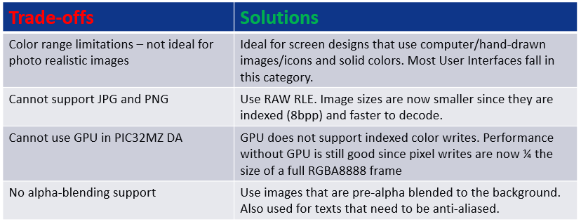

Using Global Palettte
This image compression technique is applied to the frame buffer and allows a WVGA frame to fit into the PIC32MZ DA Internal SRAM (640kB).
- Store pixel color as a value in a Look Up Table (LUT)
- Replace pixel data with the index value from the LUT (Indexed Color)
- 8-bit index value = 256 unique color entries
- Pixel data is re-inflated its actual color value at runtime
- NO SACRIFICE IN COLOR GAMUT


Indexed Color in Practice
- Memory reduction without sacrificing color gamut
- Negligible reduction in image quality
- Works best on designs that are human/computer-drawn, with mostly solid colors
Global Palette Support in MHGS and PIC32MZ DA MCU
- Automatic palette generation and code deployment
- GLCD display controller performs color lookup with negligible performance impact (<0.5%)
Tradeoffs/Solutions


 1.8.18
1.8.18